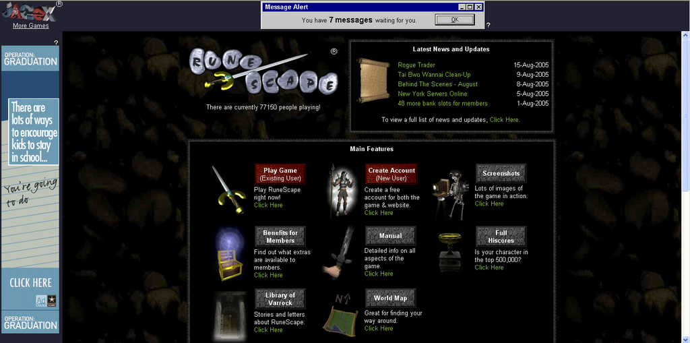
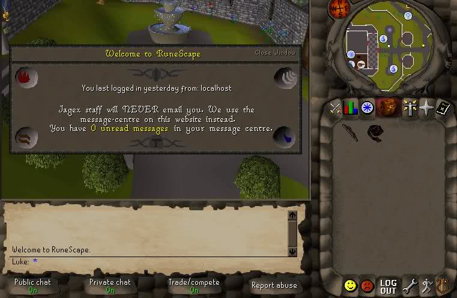

The Internet is Serious Business!
Home > Video Games > PC > RuneScape > The First Login
In September 2004 I started a new school year in a new class. I became close friends with one of my new classmates, and soon he started to tell me about a wonderful computer game he played called RuneScape. He would tell me that he could fight monsters, use magic, examine things for funny descriptions, and use items with one another (and usually be greeted by the message, Nothing interesting happens.
), and that there was a place in this game called the Wilderness (which brought to my mind pictures of a forest, even though it was actually a desolate wasteland in the game) where I could kill and be killed by other players. He told me the old trick to remembering the game's name: it was spelled the same as putting the words run and escape together. He talked up RuneScape and wanted me to start an account so the two of us could play together; after a bit of convincing, I agreed to give it a try, upon which he even created another account for me and leveled its skills a bit so I could have a head start in the game.
I cannot remember exactly how long it took for him to level up my new account. It was probably a week, or two weeks at the very most. Regardless, one day he said the account was ready for me to use.
It was probably October 2004 when I logged in to RuneScape for the first time. Unfortunately, I can't remember what else happened during that day: I can't remember what had happened in school, or what I did at home before logging on, or what I did for the rest of the evening. I am also unsure if my friend called me after school that day to push me to log in, but I remember the login process and the login session itself in exceptional detail.
The RuneScape Web site looked quite different in late 2004, before the big re-design in September 2005 that added the updates scroll. It looked something like this:

I clicked Play Game, which took me to the detail select page; I clicked High Detail (my computer was pretty high-end then), which took me to the world select page; and I picked a F2P world (I don't remember which one), and my browser (Internet Explorer 6, of course!) started to load the familiar login screen with the familiar theme.
I was somewhat interested at this point, but I didn't spend too much time staring at the login screen. I entered the username and password for the account my friend had made for me, and logged in.
Back then, the welcome message was merely a window over the actual game world; you could still rotate the camera without having closed the window first. It looked something like this, only bigger and with more information displayed:

I don't think I read the message in great detail. I closed the window and saw the game for the first time. It was truly astounding for me back then to see those 3D graphics. I had, of course, played many games with better 3D graphics on my GameCube for about a year before this, and I had also played 3D games on my computer before that as well, but RuneScape still managed to captivate me all those years ago. Whereas those GameCube games ran on a dedicated console connected to my TV, and whereas those other computer games with 3D graphics came in a CD, and I had to go through the trouble of installing them first, with RuneScape I saw 3D graphics running flawlessly in my little Web browser, with no installation required, which was completely new for me. I could switch to another window and then switch back to the game with ease; it was like magic.
Because this was the account my friend had leveled for me, I didn't start on Tutorial Island; instead, I was in Varrock's east bank. My friend had given the character a dark red shirt, blue pants, fair skin, and short brown hair, though it was wearing a bronze medium helmet when I first logged in. I think the combat level of this account was around 15.
I heard the song Garden
, which plays (among other areas) in Varrock's east bank. For me, this song will forever represent my first moments in RuneScape. I know that for most people, that song would be Newbie Melody
, which plays only on Tutorial Island, but because my friend had already made the account for me and completed Tutorial Island, my situation was a bit unusual. (I don't really consider Scape Main
, the login screen theme, as representing my first moments in RuneScape, even though, technically, it was the first song from the game I heard and Garden
was the second. I suppose it is because I wasn't actually in the game yet when I heard it.)
I can only say that my first login session was confusing. Tutorial Island was skipped for me, my friend didn't give me any information about in-game navigation, and I hadn't yet read the manual. Instead of moving around or talking to anybody, my character just stood there in the bank while I took in everything that I saw. There were what appeared to be other people around me, and a lot of yellow text appearing and disappearing in the game world, and black and blue text was moving pretty quickly in the chat box. I tried to read some of it, but couldn't really understand much: what the hell were lobs
? What the hell was a scimmy
? I saw several 2D skull and crossbones, some stationary and some moving, throughout the game world, which confused me even further.
I started clicking on things with the mouse. I clicked the interface buttons, but couldn't make sense of much, so I started clicking on things in the game world. I can't remember exactly, but I think I right-clicked some other players and saw the typical menu options (Walk here, Follow, Trade with, Cancel). I also used the keyboard arrow keys to rotate the in-game camera, staring in awe as I rotated actual 3D graphics 360 degrees in my Web browser.
This all must have lasted a few minutes, because I recall that Garden
, which has a length of about 2 minutes and 30 seconds, eventually stopped playing, and the game was then absolutely silent for a little while, as I didn't know how to enable music looping, and this was before area sound effects were added to the game.
I felt a bit intimidated by RuneScape after this experience, so I clicked on the LOG OUT
button and logged off; at that point, I did not know if I wanted to continue with this game or not.


 All written materials on this Web site are my own, and all are released under the Do What the Fuck You Want to Public License Version 2.
All written materials on this Web site are my own, and all are released under the Do What the Fuck You Want to Public License Version 2.
This page last modified on 29 March 2021.